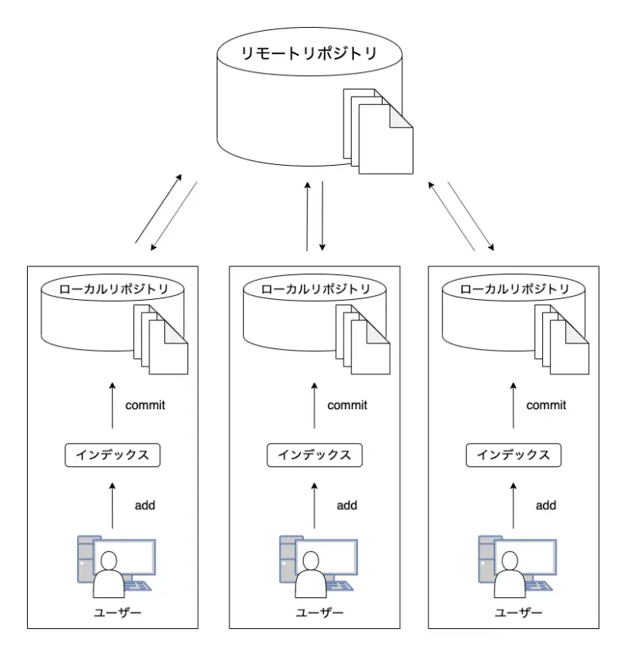

～～Gitとhtmlに関して～～
Git
Gitとはソースコードのバージョン管理システムです。※ソースコードとはプログラミング言語で書かれたコンピュータープログラムです
Gitでは自分のパソコンに全ての変更履歴を含む完全なフォルダの複製を作成できるため個々人たちが変更をそれぞれ加えても衝突せずに済みます。
Gitは今では複数人で作業を行う際には必須ツールと言われるほどになっています。
Gitでできること
- ファイルの変更履歴管理
- 過去のファイルに戻す
- 編集した履歴を複数人で共有
参考
（【初心者向け】Git（ギット）とは何か）

Gitの管理構造は上記のようになっています。
リポジトリ
リポジトリとはファイルやディレクトリを入れて保存しておく貯蔵庫のようなものです。
Gitには特定のサーバー上に設置して複数人で共有するための共有リポジトリと
ユーザーごとに配置される手元のマシンで編集できるローカルリポジトリの二つがあります。
コミット
コミットはファイルディレクトリの編集作業をローカルリポジトリに記録するために必要な操作です。
参考（【初心者向け】Gitとは何なのか。基本用語やその仕組みをまとめています。）
HTML
HTMLとは「HyperText Markup Langage」の略で
"webページを作成するためにつくられた言語"です。
※プログラミング言語ではありません。
現在インターネット上で見られる多くのwebページはHTMLで作成されています。
webページで見られるテキストやアウターラインなどの装飾、画像やリンク、フォームなどは
全てHTMLの指示によって表示されます。
覚えておくと便利なHTMLの便利なタグ
 ※タグとはテキストに意味を与える目印です
※タグとはテキストに意味を与える目印です
HTMLを使うメリットデメリット
メリット
HTMLを使用する大きなメリットはweb製作ツールがなくてもwebサイトを作成できることです。
HTMLによって作られるwebサイトは構築者以外は更新できないため、セキュリティリスクが低いこともメリットの一つになります。
デメリット
一方で記述ミスがあると、webサイトの文章構成失敗したり文字化けしたりすることです。
そしてHTMLの専門的な知識がないとwebサイトの作成や更新が難しいこともデメリットの一つと言えるでしょう。
おすすめ動画
Webの神様さんの動画です